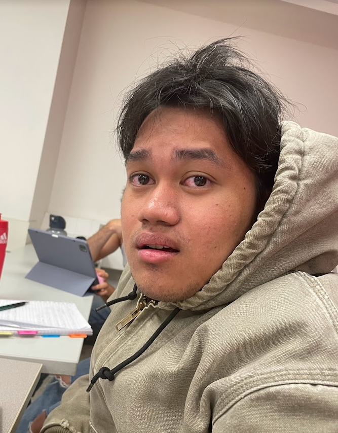

Derek Gallagher's Resume

About me
- Operating Systems | Windows 7 • Windows 10
- Applications │ Microsoft Office: Word • Excel • PPT • Eclipse • VS code
- Programming │ Java • Python (beginner) • Html • PostgreSQL • CSS • Javascript
- Methodologies │ Agile • Waterfall
- Other │ AutoCAD • Visual Studio • GitHub
- Languages │ French│Spoken & Written • English│Spoken & Written
- Licenses & Certifications │Valid driving permit
Education
Bachelor of Engineering – Software Engineering Co-op
Concordia University, Montreal, QC
- Member of the Institute for Co-operative Education
- Learned java and object oriented programming
Science DEC – John Abbott College
John Abbott College, Montreal, QC
- Pure and Applied Sciences
- Dean's List Student (2021-2023)
- Varsity men's volleyball team (2021-2022)
Projects
Concordia Code Jam Hackathon
Concordia University, Montreal, QC
- Developed an algorithm to generate random mazes of variable sizes by manipulating 2D arrays
- Worked backend on a collaborative java project
- Used GitHub to work with a team of coders
Most Recent Common Ancestor
John Abbott College, Montreal, QC
- Calculated the MRCA by designing an algorithm to trace back a family tree
- Project programmed in R studio
Remote Controlled Car
John Abbott College, Montreal, QC
- Created a Bluetooth controlled Arduino car
- Designed a 3D base in AutoCAD to support the components
- Implemented LEDs to indicates braking or turning
Work Experience
Subway Sandwich Artist
Sep 2022 - Present
- Prepare menu items according to Subway’s established standards and recipes
- Greet and assist customers with menu selections, providing recommendations and addressing inquiries
- Accurately handle cash transactions and operate the POS system
Provigo Grocery Clerk
Mar 2020 - Sep 2022
- Strong retail background with a focus on customer service and merchandising
- Exceptional organizational skills, ensuring efficient inventory management and product presentation
- Commitment to safety, sanitation, and teamwork in the workplace
Busboy at Restaurant LaPerle
Mar 2019 - Mar 2020
- Restaurant experience with a focus on customer service and teamwork
- Ability to multitask efficiently in a fast-paced environment
- Strong communication skills for effective teamwork and guest interactions